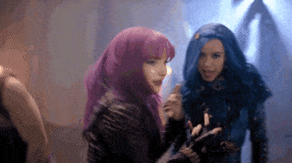

MAL
Mal é vista pela primeira vez pintando uma parede. Em seguida, ela e seus amigos causam estragos em toda a área da Ilha dos Perdidos. ("Rotten to the Core") Depois de tomar um pirulito de uma criança, sua mãe aparece. Ela dá a notícia de que os quatro foram escolhidos para participar da Auradon Preparatória. Ela dá aos quatro uma tarefa para roubar a varinha da Fada Madrinha, e dá a Mal o seu livro de feitiços. Quando eles chegam a Auradon Preparatória, eles são recebidos pela Fada Madrinha e pelo Príncipe Ben, que fez o decreto para que lhes sejam dada a oportunidade de viver entre eles. Audrey, a namorada de Ben e a filha de Aurora, é hostil e rude. Mal e Audrey trocam olhares desajeitados, antes de Audrey levar Ben para longe. Mal e Evie tornam-se companheiras de quarto, e Mal acha o quarto muito nojento, mas Evie ama ele secretamente. À noite, as duas meninas se encontram com Jay e Carlos no dormitório, em seguida, Mal diz que é sua única chance de provar a seus pais que eles são maus. Em seguida, eles foram para o museu depois de saber onde a varinha está. Mal coloca com sucesso o guarda em um sono profundo, e eles vão olhar para a varinha. Eles entram em uma sala, que contém estátuas de seus pais; Mal fica para trás, tem uma visão de sua mãe incentivando-a a continuar com o plano para roubar a varinha.
